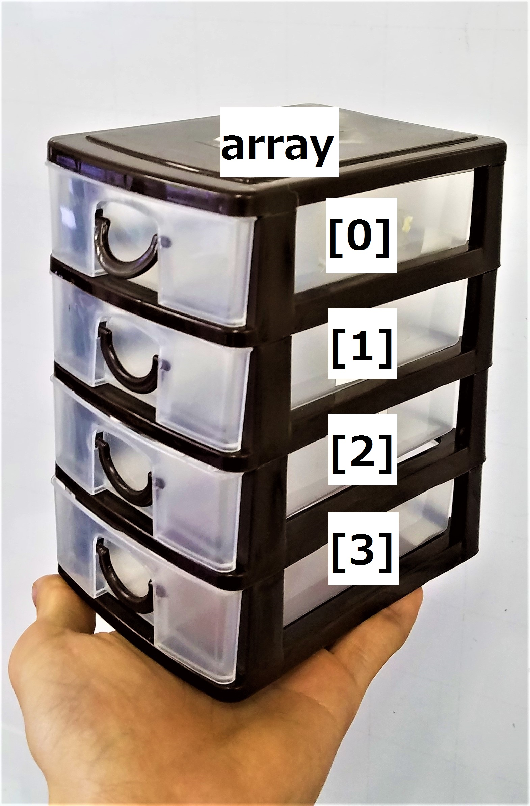

目標
配列を用いて一度に複数の変数を確保することができる。
語句説明
配列
棚のようなもの。棚の中1つ1つに変数が入っている。イメージ画像は4段ある棚。
要素
棚の中の変数1つ1つ。イメージ画像の中の引き出し1段1段。
<イメージ>
サンプル
サンプル解説
#include<array>
std::arrayを使えるようにするための文。
配列の宣言、要素
配列を使うと一度に複数の変数を確保できます。宣言は
std::array <型, 要素数> 変数名;
の形で宣言を行います。
要素は0から順番に数えられ、要素数-1個までの番号があります。配列は要素の中に変数が入っていて、各要素ごとに中身を変えられます。
各要素には
配列の型 [番号]
でアクセスできます。
配列の初期化
a,b,cでは3通りの初期化方法を紹介しています。
aは宣言と同時に代入していて、{}内で0から順番にコンマ区切りで値を代入できます。
例)std::array <int, 3> n ={3,8}
この方法だと、n[0]=3、n[1]=8となります。
また、n[2]にはこの方法のときは自動的に0が入るのでエラーが出にくくなります。
bはfor文を回して、iを使ってすべての要素にアクセスしています。
cは後述する範囲for文を使ってすべての要素にアクセスしています。
範囲for文
使い方
for(配列と同じ型 &ループ内で使う変数名: 配列の変数名){}
ループ内で使う変数名というのは、配列の中身を一旦その変数に移して実行するためです。配列の中身を書き換える場合はその変数の前に&を付けましょう。
範囲for文は配列の数だけループさせる文です。for文と違い、配列の要素数が変わってもコードを書き換える必要がない便利な文です。
課題
- ・サンプルコードを実行して出力を確かめる。
- 要提出・1から100までのフィボナッチ数列を出力するプログラムを作る。 (クリックで説明を表示)